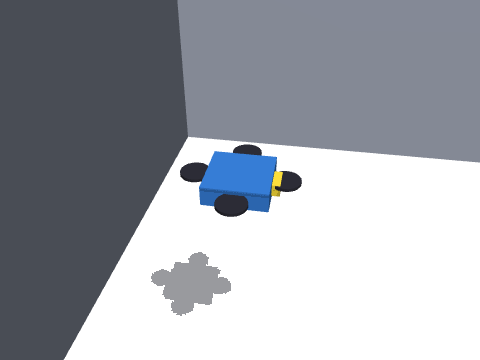

四旋翼无人机 MuJoCo 物理仿真与神经网络建图导航
在 MuJoCo 中搭建四旋翼无人机，完成物理仿真与键盘遥控、激光/深度感知与速度控制、
建图导航与 SLAM 同步仿真、端到端深度图飞行四项任务。飞控为串级位置/姿态控制器，
感知、规划、控制与端到端网络均为纯 NumPy 实现，通过 ROS Noetic 封装，
roslaunch aerial_mujoco_slam_nn_nav main.launch mode:=nav 一键启动。

项目结构概览
aerial_mujoco_slam_nn_nav/
├── aerial_mujoco_slam_nn_nav/ # 算法库
│ ├── model.py # MJCF：四旋翼 + 三个场景
│ ├── flight.py # 串级飞控（速度/高度外环 + 姿态内环）
│ ├── sim.py # MuJoCo 仿真内核（含 xfrc 推力注入）
│ ├── sensors.py # 180 线激光 / 24×32 深度 / IMU / 里程计
│ ├── mapping.py # 对数几率栅格 + 相关扫描匹配
│ ├── planning.py # A* + 膨胀代价地图
│ ├── nn.py # NumPy MLP / CNN + Adam
│ ├── neural.py # 四个网络的推理封装
│ └── nav.py # 建图导航栈（位置式前视点跟踪）
├── scripts/ # sim / teleop / nav / e2e / metrics 五个节点
├── launch/ # main.launch（mode:=teleop|nav|e2e）
├── models/ # 4 个训练好的网络权重
├── tools/ # 采集、训练、评测、录 GIF
├── tests/ # 无 ROS 单元测试
├── main.py # 一键入口（不依赖 ROS）
├── CMakeLists.txt
└── package.xml
一、环境准备与依赖安装
| 项目 | 版本 |
|---|---|
| 系统 | Ubuntu 20.04 LTS（虚拟机 / 原生） |
| ROS | Noetic（Python 3.8） |
| 物理引擎 | MuJoCo 3.x |
| 其他 | numpy、pillow |
# 1. 安装 MuJoCo（用户目录，不需要 sudo，不改系统 Python）
pip3 install --user "mujoco>=3.1,<3.3" numpy pillow
# 2. 编译
mkdir -p ~/aerial_ws/src && cd ~/aerial_ws
catkin_make && source devel/setup.bash
二、启动流程
三种方式任选：main.launch 一键、main.py 无 ROS、分终端手工起节点。
1. 一键 launch
# 键盘飞行
roslaunch aerial_mujoco_slam_nn_nav main.launch mode:=teleop scene:=warehouse
# 建图 + 导航 + SLAM 同步
roslaunch aerial_mujoco_slam_nn_nav main.launch mode:=nav scene:=corridor
# 端到端深度图飞行
roslaunch aerial_mujoco_slam_nn_nav main.launch mode:=e2e scene:=corridor
按键：W/S 前后、A/D 左右、Q/E 偏航、R/F 升降、空格 悬停、0 重置、X 退出。
无图形界面时 terminal:=false，另开终端 rosrun aerial_mujoco_slam_nn_nav teleop_node.py。
2. 无 ROS 入口（main.py）
cd ~/aerial_ws/src/aerial_mujoco_slam_nn_nav
python3 main.py --mode teleop --scene warehouse # 键盘
python3 main.py --mode nav --scene corridor # 经典栈
python3 main.py --mode neural --scene corridor # 神经规划+控制
python3 main.py --mode e2e --scene corridor # 端到端
python3 main.py --mode test # 单元测试（4 个模块）
python3 main.py --mode demo --out media/demo.gif # 录演示
3. 手工起节点（观察话题）
rosrun aerial_mujoco_slam_nn_nav sim_node.py
rosrun aerial_mujoco_slam_nn_nav nav_node.py
rostopic hz /scan # 10 Hz
rostopic echo /nav_status # fly / blocked / done
rviz # 添加 Map(/map) 与 Path(/plan)
三、实现要点
3.1 四旋翼模型与推力注入
机体质量 1.2 kg、轴距 0.22 m，四个旋翼用 xfrc_applied 施加合力与合力矩，
不依赖 MuJoCo 旋翼插件，控制量可以直接在文档里写清楚：
3.2 串级飞控
速度/高度外环输出期望加速度，再由期望加速度反解推力方向：
姿态内环用几何误差 做 PD。 实测：悬停 1 s 高度漂移 < 6 mm；0.6 m/s 前飞 2 s 位移约 1 m。
3.3 建图与导航
2D 激光（180 线）在 1.2 m 高度扫描，对数几率栅格 + 相关扫描匹配建图， A* 在 0.45 m 膨胀的代价地图上规划；执行层用位置式前视点跟踪： 把 转成机体系速度，交给飞控。 这样无人机可以侧移贴线，不会像"边转边冲"那样切角撞墙。
3.4 神经网络
| 网络 | 结构 | 输入 → 输出 | 训练方式 |
|---|---|---|---|
| 感知 | MLP 9-32-32-1 | 9 线滑窗 → 中心距离 | 自监督（无噪扫描为标签） |
| 规划 | MLP 124-64-64-2 | 11×11 局部栅格 + 目标 → 方向 | 克隆 A* 方向 |
| 控制 | MLP 6-64-64-3 | 距离/航向/三向净空 → | 克隆经典栈 |
| 端到端 | Conv(1→8,5×5,s2)+FC | 24×32 深度图 → | 走廊场景行为克隆 |
四、实验结果
三场景闭环（目标 0.4 m 内视为成功，单条 episode）：
| 策略 | warehouse | obstacle_field | corridor |
|---|---|---|---|
| 经典栈（SLAM + A*） | ✅ 8.91 s / 0.396 m / ATE 0.019 | ✅ 7.63 s / 0.391 m / 0.010 | ✅ 7.22 s / 0.393 m / 0.012 |
| 神经规划 + 控制 | ❌ 90 s 未达 | ✅ 7.63 s / 0.391 m | ❌ 90 s 未达 |
| 端到端 CNN | ❌ 11.5 s 坠机 | ❌ 10.3 s 坠机 | ❌ 13.7 s 坠机 |
离线指标：
| 指标 | 结果 |
|---|---|
| 激光去噪 | RMSE 0.659 → 0.041 m |
| 规划方向误差 | 3.68°（验证集） |
| 控制器 | vx MAE 0.070，vy MAE 0.063，ω MAE 0.292 |
| 端到端 | vx MAE 0.253，vy MAE 0.090，ω MAE 0.308 |
失败分析：端到端网络只有 170 帧走廊数据，单帧深度图缺少时序与全局信息， 飞出几米后就会撞门柱；神经规划在开阔场景会被"目标方向"主导，绕障能力不足。 这也是本包保留 A* 作为安全回退、并把经典栈作为默认演示的原因。
五、常见报错与解决方法
1. ModuleNotFoundError: No module named 'mujoco'
pip3 install --user "mujoco>=3.1,<3.3"，并确认 python3 -c "import mujoco" 通过。
2. Package 'aerial_mujoco_slam_nn_nav' not found
没有 source ~/aerial_ws/devel/setup.bash，或包不在 ~/aerial_ws/src 下。
3. 无人机起飞就翻
检查是否给 xfrc_applied 写了世界系力（本项目已按机体姿态旋转）；或
~altitude 设得过低（< 0.6 m）导致触地。
4. 键盘节点没反应
main.launch 默认用 xterm 启动，需要窗口焦点；SSH 下用 terminal:=false 后手动 rosrun。
5. 导航一直 blocked
地图还没建起来（起点被膨胀层包住），等 1–2 s；或把 ~inflation 从 0.45 降到 0.30。
6. 虚拟机里录 GIF 黑屏
GIF 用 MuJoCo 离屏渲染，不需要显示器；若黑屏，确认渲染器在 mj_forward 之后创建
（sim.py 已做延迟创建）。
六、扩展方向
- 三维导航：把 2D 栅格换成八叉树 / 体素，支持高度变化与跨楼层；
- 端到端补数据：加入历史帧（GRU）与门柱遮挡场景，或改用 DAgger；
- 与 AirSim 版本做跨模拟器对比（同一套策略接口）。